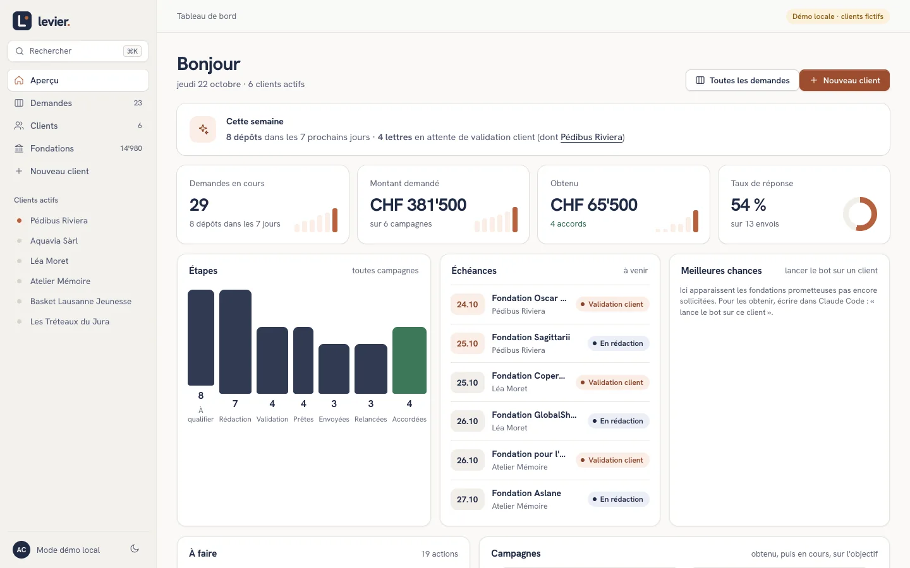
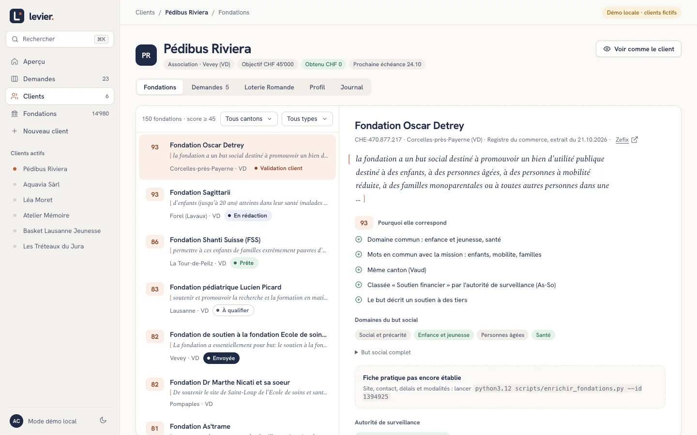
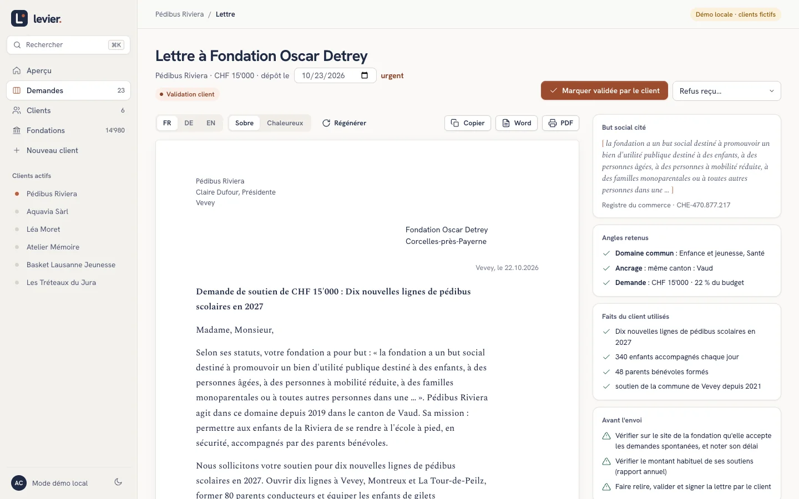
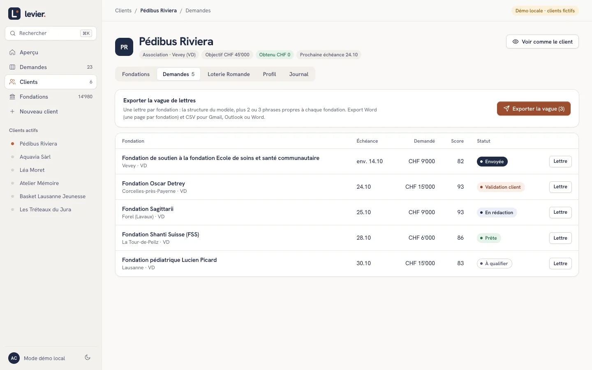
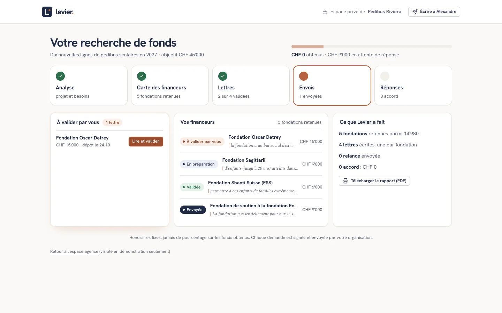

levier.Remise du projet · {{date}} · page non référencée
Tout ce qui est prêt, comment le publier, comment le faire grandir.
Quatre pièces sont terminées : la page publique, la plateforme Appui, le kit de vente et les documents de fond. Cette page les montre, dit ce qu'il reste à décider avant de lancer, et explique pas à pas la mise en ligne puis l'évolution avec Claude Code. Le projet est à toi : code, données et nom.
Chacune se consulte ici. Les documents de fond ne sont pas publiés sur Internet : ils sont dans le dossier du projet, sur GitHub (dépôt public pendant la remise : Tim le refermera quand tu auras installé le projet).
La page publique
Prête, sauf 3 mentions
Elle part de la douleur des associations (63 heures par demande acceptée, refus sans motif), calcule la date limite de dépôt, laisse essayer le matching sur 2'000 fondations romandes, puis présente l'offre, la garantie, Alexandre et 10 questions. En français, allemand et anglais.
L'outil interne : base de {{n_app}} fondations, matching expliqué, fiches pratiques, lettres, suivi des demandes, tableau de bord, espace client en lecture. La démo ci-contre tourne dans le navigateur, sans serveur : rien n'y est enregistré ailleurs que sur l'ordinateur qui l'ouvre.
Un prospectus de 2 pages (FR, DE, EN), un baromètre des fondations romandes de 4 pages, une présentation de 13 diapositives pour le premier rendez-vous. Ils reprennent les textes de la page, donc ils disent la même chose.
Audit du concurrent Spheriq, sources de données légales, architecture de l'IA, études de marché, argumentaire, scripts de prospection et d'objections, profil LinkedIn et plan du guide offert, revue du texte, guide d'hébergement.
Mode démo : six clients fictifs. Dans la vraie version, chaque conseiller se connecte avec son compte et tout le monde voit les mêmes données.

Tableau de bord. La semaine en un coup d'œil : dépôts à venir, lettres à valider, étapes de toutes les campagnes, échéances. Un bouton demande à l'IA les cinq priorités.

Les fondations d'un client. Chaque score est expliqué : la phrase du but social qui correspond, le canton, les risques.

Une lettre par fondation. Le but est cité mot pour mot ; à droite, ce qui a été utilisé et la liste « avant l'envoi ».

Les demandes. « Exporter la vague » produit un Word (une page par fondation) et un CSV pour le publipostage.

L'espace client. Ce que le client voit sans compte compliqué : où en est sa recherche, ce qu'il doit valider, ce que Levier a fait.
Le kit de vente
À envoyer en pièce jointe ou à projeter. Les PDF sont ceux du dossier kit/pdf/ ; ils se régénèrent d'une commande (voir « Faire évoluer »).
{{kit_cards}}
Les exemples de la présentation sont étiquetés « fictifs » ; la fiche d'une fondation (Fondation du Casino de Neuchâtel) est réelle, vérifiée le 22.10.2026 sur son site. Avant d'envoyer le kit à un prospect, remplacer l'adresse postale et confirmer les points de la section « Avant de lancer ».
Les données, au 22.10.2026
Registre du commerce suisse (données ouvertes), listes publiques des autorités de surveillance, Loterie Romande. Rien n'est repris de Spheriq, Fundraiso, local.ch, search.ch ou Moneyhouse : leurs conditions l'interdisent.
{{n_total}}fondations inscrites en Suisse (hors prévoyance et liquidation : {{n_app}} dans Appui)
{{n_rom}}fondations actives dans les 6 cantons romands
{{n_don}}dont le but prévoit de soutenir des tiers (classement automatique)
{{n_fiches}}fiches pratiques vérifiées en ligne (site, conditions, délais)
Ce que montre l'enrichissement des fondations
Sur {{n_fiches}} fondations romandes parmi les plus prometteuses, étudiées une à une avec une recherche web :
Indicateur
Résultat
Ce que cela veut dire
Site officiel trouvé
{{p_site}}
Une fondation sur deux environ n'a pas de site : elle se contacte par courrier, au siège.
Accepte les demandes
{{p_oui}} oui, {{p_non}} non, {{p_inc}} inconnu
Un quart indique ne pas accepter de demandes spontanées : il faut les retirer de la liste avant d'écrire.
Délais de dépôt publiés
{{p_delais}}
Le plus rare, et le plus utile : le calendrier se construit fondation par fondation.
Critères de soutien lisibles
{{p_crit}}
Base de la lettre : ce que la fondation finance, et ce qu'elle exclut.
Fiches « sûres » (accepte, confiance haute)
{{n_sures}}
Prêtes à servir pour une campagne sans autre vérification.
Échantillon choisi (fondations les plus prometteuses, répartition entre cantons), pas tiré au hasard : les pourcentages décrivent ces fondations, pas l'ensemble. Moteur : Claude avec recherche web ({{moteurs}}). Les cantons : {{cantons}}. Détail dans data/enrichi/.
Avant de lancer
Ces points dépendent d'Alexandre. Tant qu'ils ne sont pas tranchés, la page reste une démo.
Adresse postale, forme juridique et numéro IDEObligatoires pour une offre commerciale, et ils rassurent. Le pied de page contient encore « [Adresse postale à compléter] ».
Prix et garantieCHF 750, 3'500 et 650 par mois, hors TVA ou non ? La garantie (« au moins 15 fondations dont le but correspond, sinon le Diagnostic est offert ») est une proposition : à valider et à écrire dans les conditions générales.
Contenu du DiagnosticLa page dit « 5 fondations prioritaires vérifiées », l'étude parle d'une carte de 20 à 30. Choisir une seule version.
Ton parcours, avec les piècesPériode, établissements et justificatifs des CHF 100'000 obtenus ; les plus de cent fondations sollicitées ; ton rôle à la RTS (en cours ou passé) ; intitulé et année du diplôme de l'IHEID.
Déclaration de protection des donnéesÀ publier avant d'affirmer quoi que ce soit sur l'hébergement en Suisse. L'outil traite des données de clients : la nLPD s'applique.
15 ou 20 minutesTon site actuel dit 20 minutes, la page dit 15. Et peux-tu tenir « devis sous 48 h » et « point écrit chaque mois » ?
SwissfundraisingLa page cite son code éthique sans s'en réclamer. Une adhésion (indiquée à CHF 290 par an) donnerait un label, c'est à toi de décider.
Relecture de l'allemand et de l'anglaisLes deux versions sont des traductions, non relues par un·e locuteur·trice natif·ve.
Mettre en ligne
La démo que tu vois ici est statique : elle ne peut pas servir à de vrais clients, car les données y restent dans le navigateur. La vraie version tourne sur un serveur suisse, avec un compte par conseiller.
45 min
la première fois, avec Claude Code à côté de toi.
≈ CHF 7 par mois
serveur VPS Lite d'Infomaniak (relevé le 21.10.2026, à vérifier), plus l'IA à l'usage : moins de CHF 20 par mois pour 20 clients.
appui.levierconseil.ch
le sous-domaine de ton site actuel, qui reste sur Netlify.
Le guide complet, avec les commandes à copier, est dans docs/HEBERGEMENT_INFOMANIAK.md. Le plus simple : ouvrir le dossier dans Claude Code et écrire « guide-moi pour mettre Appui en ligne chez Infomaniak ».
Sur https://appui.levierconseil.ch/_/ : le compte administrateur, puis un compte par conseiller. Le mot de passe va dans un gestionnaire de mots de passe, jamais dans un fichier.
Brancher l'IA suisse
Manager Infomaniak, AI Services : créer le produit et un jeton, les mettre dans le fichier .env du serveur. Le bouton « Rédiger avec l'IA » apparaît dans chaque lettre (modèle Qwen 3.5).
Sauvegardes
Une tâche quotidienne copie la base ; une fois par mois, télécharger une sauvegarde et vérifier qu'elle s'ouvre.
Mise à jour ensuite : la même commande qu'à l'étape 4. Les clients, demandes et lettres ne sont jamais écrasés : ils vivent dans le volume du serveur.
Faire évoluer
Tout le projet est pensé pour être modifié en français avec Claude Code : le fichier CLAUDE.md lui explique ce qu'est Appui, quelles commandes lancer et quelles règles respecter.
Installer Claude Code
Application Claude pour ordinateur (onglet Code) ou Terminal. Télécharger le projet (une seule fois), puis l'ouvrir dans Claude Code :
Le dépôt est public le temps de la remise. Une fois le projet sur ton ordinateur, copie-le dans ton propre compte GitHub (dépôt privé) : le dépôt de Tim sera refermé.
Premier message
« Aide-moi à installer Appui. »
Claude lit DEMARRER.md, installe, crée ton compte administrateur et ouvre l'outil.
Ensuite, parler normalement
Quelques demandes courantes :
Tu dis
Claude fait
« Lance Appui en local »
Reconstruit le site, démarre le serveur et ouvre l'outil.
« Lance le bot sur https://site-du-client.ch »
Lit le site, fixe les critères, cherche et classe les fondations (3 à 6 minutes).
« Fais les fiches des meilleures fondations de <client> »
Vérifie en ligne site, conditions, délais et pièces des 10 premières (environ 15 minutes).
« Mets la base à jour »
Retélécharge le registre du commerce, reconstruit la base et republie.
« Régénère le kit de vente »
Relance scripts/construire_kit.py : les 5 PDF se refont avec les chiffres du jour.
« Change la phrase d'accroche de la page »
Modifie le texte (dans scripts/construire_landing.py), vérifie le style, reconstruit FR, DE et EN.
« Ajoute un conseiller »
Te guide dans l'administration du serveur.
Rythme conseillé
Chaque lundi : la veille hebdomadaire cherche les nouvelles fondations et les changements de règles. Demander à Claude Code : « crée la tâche planifiée de veille hebdomadaire ».
Chaque campagne : bot, fiches, lettres, validation par le client, envoi par l'association, relances.
Chaque mois : mise à jour de la base, vérification d'une sauvegarde, relecture des chiffres du kit.
Quel modèle choisir dans Claude
Règle de Tim : plus la tâche est stratégique, plus le modèle est puissant.
OpusStratégie et planification
Positionnement, offre et prix, nouvelle fonction à concevoir, rédaction de la page ou d'un argumentaire.
SonnetExécution
Construire ce qui est décidé : une fonction, une page, un document, une correction, un test.
HaikuTâches faciles et basiques
Fiches de fondations en lot, classement, conversions. Le script enrichir_fondations.py accepte --modele haiku.
Où est quoi
Dossier
Contenu
landing/
La page publique (le texte est dans scripts/construire_landing.py).
src/
La plateforme Appui (HTML, CSS et JavaScript, sans outil de compilation).
serveur/
Le serveur (PocketBase), les règles d'accès, le proxy de l'IA suisse.
scripts/
Données, bot, fiches, kit, contrôle de rédaction, mise en ligne.
kit/
Le kit de vente : sources et PDF.
docs/
Audits, études, argumentaire, vente/ (prospection, LinkedIn, revue du texte), hébergement, feuille de route.
.claude/skills/
La skill de rédaction française : méthode, règles de confiance, tics d'IA à éviter.
Règles à tenir
Aucune extraction de Spheriq, Fundraiso, local.ch, search.ch ou Moneyhouse : leurs conditions l'interdisent.
Aucun envoi automatique de lettres : l'association relit, signe et envoie. La prospection se fait un message à la fois, à la main (loi contre la concurrence déloyale, art. 3 al. 1 let. o).
Honoraires fixes, jamais de pourcentage sur les fonds obtenus (principes éthiques de Swissfundraising, ch. 4).
Aucun chiffre, témoignage ou logo inventé, ni sur la page, ni dans les lettres. Un chiffre garde sa source et sa date.
Données personnelles : pas de noms de membres de conseil dans la base ; les documents confidentiels des clients passent par l'IA hébergée en Suisse.
Secrets : jetons et mots de passe dans le fichier .env (jamais versionné), pas dans un e-mail ni un document.
Un texte, une vérification : avant de publier, python3 scripts/controle_texte.py signale les formules creuses, les anglicismes et les chiffres sans source.
Prochaines évolutions
Classées par effet sur ton temps et sur les accords obtenus. Chacune est à valider avant d'être construite (détail dans docs/etude/2026-10-22_0_Synthese_et_propositions.md).
Quand
Quoi
Pourquoi
Tout de suite
Statut d'accès par fondation (accepte, sur invitation, non), moteur de délais, anti-doublon, liste des pièces, garde-fous de rédaction
Ne plus écrire à une fondation qui refuse, ne manquer aucune échéance, protéger ta réputation auprès des fondations.
Gains de temps
File « Aujourd'hui » avec calendrier, bibliothèque de textes par client, lecture automatique du règlement, relecture « conseil de fondation », recherche par le sens
Une lettre en 15 minutes au lieu d'une heure ; moins d'erreurs de classement.
Ce que voit le client
Carte des financeurs en PDF, rapport mensuel, stratégie offerte au premier contact
Le livrable que le client garde et montre.
Prospection
Liste de prospects issue du registre (4'750 associations romandes) et des bénéficiaires de la Loterie Romande
Un fichier propre, avec un suivi dans Appui.
Pour lancer la suivante : ouvrir le dossier dans Claude Code, choisir Opus pour concevoir, puis Sonnet pour construire, et écrire par exemple « construis A2, le moteur de délais, d'après la synthèse ».